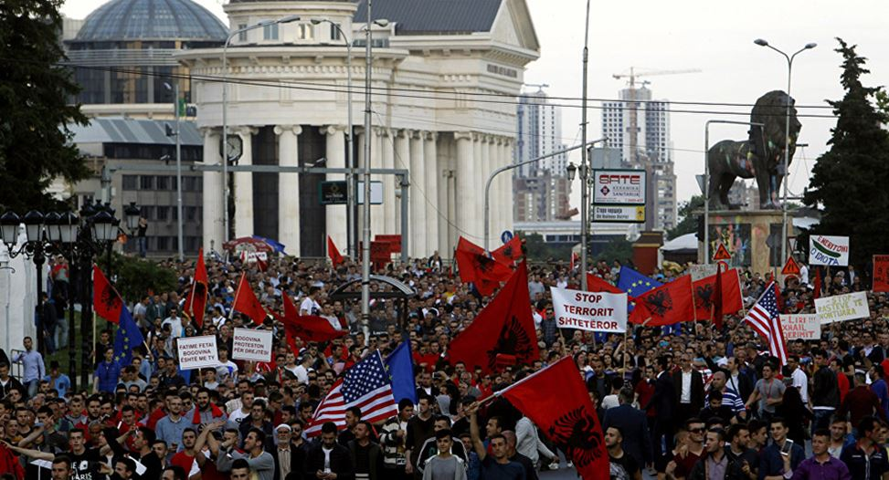

Indépendante depuis le 8 septembre 1991, la Macédoine est la seule République à être sortie pacifiquement de la Fédération yougoslave. Elle n’en est pas moins traversée depuis par des troubles ethniques qui secouent un espace où la question des nationalités apparaît comme une constante de l’Histoire. A l’heure actuelle, la Macédoine est avec la Serbie et la Republika Srpska (en Bosnie) au cœur d’un bras de fer entre un Occident américanisé et agressif qui a poussé au choc des ethnies et des religions pour morceler la région et partir à la conquête de l’Est et la Russie renaissante de Vladimir Poutine qui porte un intérêt grandissant aux Balkans …
Le champ du politique macédonien comporte trois acteurs collectifs : les sociaux-démocrates du SDSM de Zoran Zaev soutenus par les Organisations non gouvernementales de George Soros et par la « communauté internationale » des ambassades occidentales, le parti VRMO-DPMNE (Organisation Révolutionnaire Intérieure Macédonienne) de l’ancien premier ministre Nikola Gruevski au pouvoir avec une nette majorité parlementaire jusqu’aux élections de décembre 2016 (arrivé en tête à ces élections), enfin troisième composante les partis ethniques albanais qui jouent leur propre jeu.
C’est ainsi que le petit parti albanais BDI, qui participait jusqu’alors au gouvernement dans la majorité conduite par la VRMO-DPMNE, a changé de camp, donnant une courte majorité (de 6 sièges) à la coalition du SDSM (1).
Le président Gjorge Ivanov, qui jusqu’alors s’appuyait sur la majorité d’hier refuse de soutenir l’ancienne opposition devenue majorité par le jeu de bascule albanais, une ancienne opposition qui dénonce un « coup d’Etat constitutionnel» (2). On reproche à Ivanov de faire un coup d’Etat mais ce n’est qu’une réponse du berger à la bergère : l’ancienne opposition a tout fait pour empêcher de nouvelles élections, obtenant sur l’avis américano-occidental qu’elles soient reportées par deux fois en 2016 sous le prétexte fallacieux que l’on risquait une fraude.
En fait les ONG de Soros s’essayaient à un Maidan à Skopje où la rue aurait tout simplement renversé le gouvernement au nom de la lutte contre le scandale des écoutes téléphoniques et contre la corruption, thème vague susceptible d’être approuvé par tout le monde. Malgré de grands moyens, la tentative devait échouer et l’opposition acceptait finalement les élections.
Aujourd’hui le président Ivanov refuse le gouvernement proposé par les ambassades occidentales et propose comme sortie de crise… de nouvelles élections !
L’Occident a mené un véritable travail de sape en soutenant la tentative de « révolution de couleur » (« Sarena Revolucija ») des ONG de Soros et de l’USAID dans les rues de Macédoine mais cette tentative à répétition a échoué, se heurtant à de puissantes contre-manifestations organisées par le VRMO-DPMNE et le mouvement des citoyens pour l’unité de la Macédoine
L’Occident (Washington/Bruxelles) soutient le SDSM et les partis ethniques albanais tandis que la VMRO-DPMNE a le celui de la Russie. Comme le hongrois Victor Orban, le président Ivanov entretient de bonnes relations avec Vladimir Poutine et aurait même demandé par écrit son aide en cas de « situation de détresse ». Fait significatif, Ivanov a rencontré en mars dernier le frondeur hongrois Victor Orban à Budapest.
La Hongrie est membre de l’OTAN mais on sait qu’elle s’est rapprochée de la Russie à travers notamment la crise ukrainienne. Les tentatives de déstabilisation organisées par l’ambassade américaine à Budapest et les menaces de l’Union Européenne quant aux mesures anti-migrants ont renforcé la détermination d’Orban.
A l’origine des accords de Przino signés un an auparavant et qui prévoyaient la mise à jour des listes électorales , la nomination d’un procureur spécial chargé d’instruire le scandale supposé des écoutes téléphoniques, des réformes en profondeur, le départ du premier ministre Nikola Gruevski et le retour de l’opposition au Parlement, les représentants de l’Union Européenne et l’ambassadeur des Etats-Unis mènent une guerre permanente contre le président Ivanov et le parti VMRO-DPMNE de Gruevski. Arguantde sa visite à Orban, le président Ivanov n’a pas reçu Johannes Hahn, le représentant de l’Union Européenne chargé d’exercer avec ses collègues Samuel Zlogav, Ivo Vajgl, Eduard Kukand et Knut Flekeinstein les pressions de Bruxelles soutenues par l’ambassadeur américain Jess Baily. Cette arrogance et les agissements des Ong et médias de Soros ont tellement excédé les Macédoniens qu’un véritable vent de révolte s’est levé avec la naissance d’un mouvement anti-Soros et des manifestations publiques contre lui. La « Plateforme de Tirana », comme il est dit à Skopje, ne passera pas.
Derrière la joute entre les deux pôles politiques macédoniens se cache un bras de fer souterrain entre les deux blocs géopolitiques mondiaux actuels, le bloc de l’Etat profond américano-occidental hérité des Clinton et qui continue à fonctionner (à l’impuissance de Donald Trump) d’une part et le bloc multipolaire représenté par la Russie indépendante et porteuse d’espoir pour les non alignés derrière Vladimir Poutine de l’autre.
Le spectre de la Grande Albanie…
Les Albanais ont leur propre objectif et le choix de plusieurs stratégies qui peuvent être combinées. Sur le plan électoral, leurs partis ethniques peuvent s’allier avec l’un ou l’autre des deux blocs répartis entre Bloc Américano-Occidental et Russie. Les Albanais savent Washington et Bruxelles à leurs petit soins pour une raison : depuis la destruction organisée de la Yougoslavie et le morcèlement de cette dernière en sept micro-Etats , ils ont obtenu tout ce qu’ils ont voulu : l’indépendance du Kossovo, des facilités au Monténégro et des avantages décisifs en Macédoine après les « accords d’Ohrid » . Mais ils veulent plus. L’idée, affichée ouvertement par certains, est la réunion des albanais ethniques de tous les pays des Balkans dans une Grande Albanie .Ceci concerne aussi bien l’ex Yougoslavie que la Grèce car des Albanais revendiquent la Chamérie, région du nord-ouest de la Grèce et Corfou. L’identité ethnique de cette région est plurielle et des Grecs revendiquent pour leur part la région sud de l’Albanie qu’ils nomment l’ Epire du Nord. En conflit latent avec tous leurs voisins (3) dans des entités où ils forment des communautés minoritaires, les Albanais présentent un intérêt pour les puissances oeuvrant à la déstabilisation. Bien avant l‘éclatement de la Yougoslavie, le facteur albanais a été pris en compte par les services états-uniens et ceux qui en Europe leur étaient associés, en particulier les britanniques et les allemands.
La stratégie non électorale des Albanais peut se combiner avec une guérilla qui se manifeste régulièrement sous la forme de coups de main comme les attaques de postes de police ou de tentatives plus importantes comme lors de l’affaire de Kumanovo. Le 8 mai 2015, un groupe armé albanais venu du Kossovo investit Kumanovo entre la frontière serbe et la capitale Skopje et tente de prendre la ville. Il se heurte à la vigoureuse contre-attaque des forces de l’ordre macédoniennes qui essuient des pertes mais repoussent l’assaut et neutralisent le groupe évalué à une centaine d’hommes qui essuie encore plus de pertes. La rumeur a couru que des opérateurs de nationalité britannique et américaine étaient associés à l’attaque. Cette affaire rappelle celle survenue en 2001 à Aracinovo à proximité de Skopje.
A ce sujet voici ce que j’écrivais en juillet 2001 dans La Lettre Géopolitique :
« En Macédoine la situation ne cesse de se dégrader. Comme prévu, la guerre ethnique a commencé et l’on assiste à la multiplication des affrontements armés provoqués par l’UÇK, l’Armée de Libération du Kossovo. Les échanges de tirs qui étaient confinés à la région de Tetovo s’étendent maintenant à la périphérie de Skopje et chaque communauté a tendance à se replier sur elle-même. Des déplacements de population sont observés, touchant surtout l’élément slave orthodoxe. Un vif sentiment de colère se manifeste dans la population à l’encontre des institutions occidentales accusées de jeter de l’huile sur le feu et de stimuler le terrorisme albanais.
L’existence de groupes prônant la séparation de la partie à dominante albanaise de la FYROM n’est pas nouvelle, ils n’ont cessé de se manifester depuis les premiers temps de la fragmentation yougoslave. Jusqu‘à l’an dernier la revendication essentiellement politique était conduite par les deux principaux partis albanais, le Parti Démocratique des Albanais PDS d’Arben Xhaferi et le Parti de la Prospérité Démocratique PPD des Albanais d’Ahmed Imeri, tous deux représentés au parlement et au gouvernement.
Ce qui est nouveau c’est le déclenchement de la lutte armée (comme au Kossovo) pour arracher la partition de la République. Ces dernières années le nord-ouest de la Macédoine était l’un des principaux points de passage et une base arrière de l’UÇK pour l’acheminement d’armes à travers le massif de Sar Planina au sud de Prizren. Les terroristes du Kossovo trouvaient de l’autre côté aide et refuge auprès de la mouvance séparatiste des partis légaux PDA et PDP et de l’Université parallèle albanaise de Tetovo. Sise jusqu’en avril dans de petits villages autour de cette ville, la guérilla albanaise s’est déplacée à l’est dans la région de Kumanovo et a atteint les faubourgs de Skopje. Des attentats ont même eu lieu dans la capitale.
La complaisance envers l’OTAN n’était pas une garantie de paix. Les Macédoniens s’en aperçoivent à leurs dépens. La Macédoine a été la route principale de l’invasion du Kossovo par l’OTAN via la Grèce, avec la complicité servile de ses dirigeants. Les Occidentaux s’y trouvaient en terrain conquis mais le prétexte de l’aide aux Albanais martyrisés par les Serbes est tombé. La guerre ethnique déclenchée par la Contra de Washington arrive à point nommé pour justifier une occupation qui sera accompagnée d’un nouveau protectorat. Ils avaient dit qu’ils allaient transformer la Yougoslavie en « une série de protectorats ».
Emissaires de l’OTAN, de l’OSCE, de l’Union Européenne, du Département d’Etat américain du Foreign Office, tous depuis 6 mois multiplient les navettes à Skopje. Au début ils ont fait mine de condamner les « extrémistes » (albanais) non sans appeler les forces macédoniennes à la « retenue ». Mais ils en sont très vite venus à mettre sur un pied d’égalité le gouvernement légal et les terroristes pour finalement reprendre à leur compte les exigences de l’UÇK. Cela a provoqué la colère légitime des Macédoniens mais devaient-ils s’attendre à autre chose de la part des fabricants de guerre ?
Le double jeu américain.
Il a bien été question de proclamer « l’état de guerre » mais la « communauté Internationale » s’y est opposée et a imposé à Skopje la composition d’un « gouvernement d’union le Pdp. C’était une provocation supplémentaire car ce gouvernement encore plus composite que le précédent n’est qu’une fiction qui accentue la cassure entre les deux principales communautés et facilite la tache de l’irrédentisme albanais. Mais n’était-ce pas le but recherché ?
Sous la houlette des responsables de l’OSCE et de l’OTAN, Javier Solana et George Robertson, la coalition des partis s’engageait à « relancer le dialogue » pendant que l’UÇK poursuivait ses opérations. C’est ainsi qu’elle prenait le contrôle de la bourgade d’Aracinovo à dix kilomètres à l’est de Skopje. Sous la pression occidentale, les Macédoniens acceptaient contre leur gré une amnistie des terroristes et l’OTAN se proposait de régler l’affaire d’Aracinovo.
Le 24 juin Solana obtenait un cessez-le-feu en faveur des Albanais d’Aracinovo alors que les forces macédoniennes étaient sur le point de reprendre la position. Se produisait alors un évènement significatif : l’OTAN (les Américains) organisait le transfert vers le nord de 400 terroristes avec arme et bagages. Les armes de fabrication américaine servaient à attaquer de nouveau les forces gouvernementales depuis la localité de Nikustak. Circonstances aggravantes, on apprenait que parmi les évacués se trouvaient 17 « conseillers militaires américains » du MPRI, Military Professional Resources Inc., une société de mercenaires basée en Virginie, qui s’est déjà illustrée en Krajina et en Bosnie contre les Serbes. C’est le chef du MPRI, le général américain (c.r.) Richard Griffith, en relation permanente avec l’US 15th Military Intelligence Service de Camp Able (près de Skopje) qui transmettait les plans opérationnels de l’Armée Macédonienne à l’UCK. Le plus beau c’est que MPRI et Griffith sont payés pour apporter leurs conseils à l’Armée macédonienne… Le double jeu américain a éclaté au grand jour.
C’est le commandant en chef de l’Armée Macédonienne, le général Andrejevski, qui transmettait ces plans à Griffith, lequel les fournissait à l’UÇK. Une fois l’affaire révélée par la presse macédonienne, Andrievski était contraint de démissionner mais c’était pour se retrouver conseiller militaire du président Trajkovski. Coup classique, Andrejevski a fait dans le passé un stage de formation militaire aux Etats-Unis et ces derniers l’ont sans doute mis en situation de ne plus rien pouvoir leur refuser.
Le premier ministre Georgievski accusait ouvertement les Anglo-Américains d’appuyer les terroristes albanais et qualifiait les « négociations » imposées par les Etats-Unis et l’ « Europe » de « scénario pour morceler la Macédoine ». Giorgievski fustigeait le « style cowboy » des envoyés spéciaux américains et les « pseudo démocraties occidentales » qui oeuvrent pour la partition du pays : « Maintenant les masques sont tombés et il est clair que les organisations terroristes en Macédoine bénéficient d’un sérieux support logistique des démocraties occidentales ». Robert Frowick, l’envoyé spécial de l’OSCE pour la Macédoine, qui sympathisait ouvertement avec l’UCK, avait déjà vu sa mission écourtée et avait été éloigné à Bucarest. Enfin il ne fait pas bon d’appartenir à la presse occidentale à Skopje. La BBC et l’Agence Reuter sont dans le collimateur. Leur production tendancieuse exaspère les Macédoniens qui se souviennent de l’utilisation faite précédemment de ces images et de ces reportages en Bosnie et au Kossovo. Les Macédoniens ont le sentiment de se trouver dans le « dernier domino ». L’affaire d’Aracinovo les a fait réagir violemment et ils sont descendus nombreux dans la rue pour manifester leur exaspération. Ils ont investi le Parlement et, tandis que certains tiraient en l’air des rafales de Kalachnikov, les Américains se calfeutraient dans leur ambassade et dans leurs cantonnements en attendant que l’orage passe.
Les Anglo-Saxons se savent dans le collimateur. Les Etats-Unis et la Grande Bretagne ont demandé à leurs ressortissants de ne plus se rendre en Macédoine. Washington a « restreint » son personnel diplomatique. Dans ce contexte, les Macédoniens savent ce qu’ils doivent attendre des « médiateurs » dépêchés par la « communauté internationale », l’américain James Pardew et le français François Léotard.
Le conseiller spécial des Etats-Unis en Macédoine n’est pas un inconnu puisqu’il a déjà opéré en Bosnie comme officier de renseignement. En 1993, il supervisait les parachutages clandestins d’armes aux musulmans bosniaques d’Izetbegovic dont il était le conseiller. Il a été l’adjoint de Robert Gelbart, l’envoyé spécial de Clinton dans les Balkans (qui sévit actuellement comme ambassadeur de Washington en Indonésie). A Skopje, Pardew est assisté dans sa tâche par Peter Feith, plus particulièrement en charge des relations avec la partie albanaise (l’UCK). Ces chargés de mission américains ont tous le même profil. Officiellement diplomates, envoyés spéciaux, conseillers, il n’est pas nécessaire de beaucoup creuser pour découvrir (comme William Walker hier au Kossovo ou Richard Butler en Irak) qu’ils portent une double casquette. Spécialistes de la subversion, ces agents n’hésitent devant aucune manœuvre ni aucun coup tordu pour défendre les intérêts de la puissance globale. Quant au représentant (« pour 4 mois… ») de l’Union Européenne, François Léotard, il est voué à jouer le rôle que ses maîtres anglo-américains voudront bien lui laisser jouer, un simple rôle de figurant. A peine arrivé, il a tenu des propos qui ont profondément déplu : « Il n’est pas question de remettre en cause la légitimité du gouvernement macédonien. Par contre, il faut bien discuter avec cette guérilla, en tout cas il faut bien qu’eux (le gouvernement macédonien) discutent avec cette guérilla… pour que la paix puisse s’installer » (…). Un scénario semblable à ceux déjà vus et devant aboutir à la même installation de forces de l’OTAN qu’en Bosnie et au Kossovo est en marche en Macédoine. Comme en Bosnie on a fait appel à Robert Badinter pour étudier une « nouvelle Constitution » favorable ici aux Albanais mais les Albanais l’ont récusé. Comme en Bosnie et au Kossovo, les terroristes appuyés par l’Ouest font monter les enchères par l’intermédiaire de leurs partis gigogne et peuvent compter sur les Américains pour les soutenir dans le refus de tout compromis et leur tactique est rodée : il s’agit de faire capoter toute négociation et d’en faire porter le chapeau à la partie adverse. Les Américains, qui souhaitent négocier en ce moment un bail de 75 ans pour leur base de Camp Bondsteel (visitée par Bush en juillet) jalonnent leur conquête de l’Est de châteaux forts. Ils ne le font pas pour défendre la démocratie et les droits de l’homme comme le croient les candides mais pour étendre leur Empire. Et plus ils parlent de paix plus ils font la guerre ».
(Titre de l’article : République de Skopje, un nouveau conflit pour un nouveau protectorat. Objectif des Anglo-Américains, tirer parti des troubles provoqués pour imposer une Fédération bancale, comme en Bosnie).
Une double querelle avec la Grèce
Avec la Grèce se pose la querelle du nom. La Macédoine s’appelle officiellement FYROM (Former Yugoslav Republic of Macedonia), l’ARYM en français.
L’Etat grec voisin dont la région de Thessalonique s’appelle aussi la Macédoine tolérait ce nom tant qu’il s’agissait de la dénomination d’une République (Province) de la Yougoslavie. Mais en 1991 quand devenue Etat la République régionale a repris cette appellation après s’être détachée de la Yougoslavie, les choses se sont envenimées car le nouvel Etat a voulu adopter aussi comme drapeau le symbole antique du Soleil de Vergina.
C’en était trop pour la Grèce qui a organisé un blocus de la frontière dommageable pour la nouvelle entité jusqu’à ce qu’un accord se fasse sur l’acronyme FYROM. Accord obtenu sous la pression et qui ne satisfait pas les Macédoniens.
Désireux de se fabriquer une identité, les nationalistes macédoniens sont virtuellement en conflit avec le voisin du sud sur le caractère macédonien du nord de la Grèce, ce qui ne facilite pas les relations avec les Grecs.
Risque de disparition de l’Etat macédonien
Le conflit avec la Grèce s’ajoute à celui avec l’Albanie soupçonnée de vouloir s’agrandir sous le prétexte de la présence de populations albanaises hors de ses frontières. En fait l’irrédentisme albanais vient surtout de la province du Kossovo érigée en Etat par la « communauté internationale » en 2008 et qui se joue des frontières établies. La relation avec les deux autres voisins est aussi problématique.
Ancienne région serbe, la Macédoine entretient des relations ambigües avec la Serbie. A l’origine de son érection en République dans le cadre de la Yougoslavie, le Maréchal Tito qui voulait devenir « empereur des Balkans » avait favorisé sa différence en codifiant une langue à mi-chemin entre le serbe et le bulgare. Les noms avaient été bulgarisés et la région, essentiellement agricole jusqu’en 1944, industrialisée. L’objectif était de créer un lien géopolitique socialiste avec la Bulgarie. Une velléité qui devait déplaire à Staline et explique la rupture avec lui en 1948. Le désir d’empire de Tito s’est manifesté aussi avec les Albanais et explique son attitude bienveillante à leur égard au Kossovo de même que la création surprenante d’une « nationalité musulmane » en Bosnie et Herzégovine. Là il s’agissait de plaire aux pays musulmans dans le cadre du Mouvement des Pays Non Alignés. Au-dedans comme au dehors, cette posture conférait à la Yougoslavie socialiste une dimension dépassant son importance.
Cette macédonisation de l’ex République du cadre fédératif yougoslave de Skopje explique le statut minoritaire de ceux qui continuent à s’y dire serbe. Bien que les Serbes de Macédoine soient en bon terme avec le principal parti macédonien (VMRO-DPMNE) et le soutiennent politiquement, la « minorité serbe » pâtit de ce petit nationalisme sans perspective. Quand on prétend être un Etat, on ne peut pas être en mauvais termes avec tous ses voisins, surtout ceux avec lesquels on a le plus d’affinités.
Les relations avec la Bulgarie sont encore plus complexes. Pour s’en faire une idée on lira Les Comitadjis d’Albert Londres (4). Dans ce livre le mythique reporter à l’ancienne enquête sur l’ORIM, l’Organisation Révolutionnaire Intérieure de Macédoine, qui, comme son nom ne l’indique pas, est un mouvement bulgare. C’est un membre de l’ORIM qui a assassiné le roi Alexandre de Yougoslavie à Marseille en 1934. L’ORIM historique était divisée en factions et agissait pour une Grande Bulgarie incluant la Macédoine yougoslave. L’ORIM est l’acronyme français de VMRO, le principal parti en… Macédoine. Le but de la VMRO macédonienne n’est pas la Grande Bulgarie mais la (Grande ?) Macédoine. Encore aujourd’hui il existe un VMRO bulgare mais aussi un contentieux sur la Macédoine du Pirin, une région du sud-ouest de la Bulgarie revendiquée par des nationalistes macédoniens. (5) Dans les Balkans plus qu’ailleurs, les oppositions et les guerres ne peuvent se comprendre sans la connaissance des conflits historiques remontant parfois loin dans le temps. C’est pourquoi les journalistes qui n’y connaissent rien écrivent n’importe quoi, on l’a constaté pendant la guerre yougoslave. A cela s’ajoutent les influences, les partis pris et l’autocensure qui faussent les jugements. Comme on le voit, la question macédonienne est assez compliquée et ne facilite pas au commun la compréhension des problèmes actuels…
Comme la Serbie, comme la Bosnie et Herzégovine et la Republika Srpska où cette dernière est pour le moment insérée, la Macédoine/FYROM n’appartient ni à l’Union Européenne ni à l’OTA N. Le bras de fer entre le Bloc Américano-Occidental (BAO), en perte de vitesse et de repères depuis l’élection de Trump, va se poursuivre et s’intensifier dans ce petit Etat problématique que certains voudraient annexer à leurs organismes (OTAN, UE) et/ou carrément découper. La partition au profit des Albanais (6) est dans les cartons des services de renseignement occidentaux mais aussi le dépeçage entre l’Albanie et la Bulgarie qui signifierait la fin de l’entité. C’est la menace de ceux qui veulent à n’importe quel prix intégrer la Macédoine à l’empire marchand occidental. Discrète mais très présente et observant de près l’évolution de la situation, la partie russe est, avec la détermination d’une population qui pousse les dirigeants à résister aux pressions étrangères, la clef de la survie de la Macédoine telle qu’elle est.
Yves Bataille
========
Notes
Résultats des élections parlementaires de 2016 : VMRO-DPMNE : 51 sièges, SDSM : 49 sièges, BDI : 10 sièges, BESA : 5 sièges, PDSh-LR : 3 sièges, PDSh : 3 sièges (ces quatre Derniers des partis albanais).
Dans un coup de force institutionnel, écrit Le sorosien Courrier des Balkans, « le chef de l’Etat a refusé de confier les rênes du pouvoir au chef du SDSM. Le VRMO-DPMNE, qui tient le pays d’une main de fer depuis 2006 essaie de jouer les prolongations en brandissant, encore une fois la menace des risques « d’éclatement du pays » (…). Gjorge Ivanov, professeur de sciences politiques, sans étiquette mais proche du VRMO-DPMNE a été élu président de la République en 2009. Il a succédé à Branko Crvenkovski, du SDSM.
Outre cette querelle avec la Grèce les cercles irrédentistes albanais revendiquent les régions de Plav, Gusinje et Ulcinj) au Monténégro, les enclaves de Medvedje, Bujanovac et Presevo en Serbie, enfin une zone hachurée entre Kumanovo, Tetovo, Gostivar, Struga en Macédoine. Le territoire n’est pas homogène et les Albanais comptent sur l’aide de pays musulmans et leur natalité pour l’homogénéiser avec le temps. Ils comptent aussi, évidemment, sur la complaisance de Washington et Bruxelles à qui ont aidé à la reconnaissance de l’université albanaise de Tetovo.
Titre complet : Les Comitadjis ou le terrorisme dans les Balkans. Ecrit en 1931. Réédition Christian Bourgeois, 10/18, Paris, 1989.
Cooptée dans l’UE et l’OTAN (comme la Roumanie), la Bulgarie verrouille la région Balkans/Mer Noire contre la Russie. Son président récemment élu est favorable à la Russie mais le premier ministre Boïko Borisov, dont le parti est arrivé en tête aux élections du 26 mars, joue le jeu atlantiste. La Bulgarie a empêché il y a deux ans le gazoduc russe South Stream de traverser son territoire et Turkstream, la nouvelle variante de ce gazoduc devrait maintenant passer par la Macédoine via la Grèce et la Turquie. La « neutralisation » d’Erdogan sur l’affaire syrienne a permis à la Russie de renégocier le chemin du gazoduc vital pour l’alimentation en gaz d’une partie de l’Europe. Evidemment cela ne plait pas aux atlantistes qui s’intéressent d’autant plus à hisser au pouvoir à Skopje des éléments à leur solde.
Répartis en tendances et ne s’entendant pas entre eux, les partis albanais de Macédoine répercutent les clivages politico-religieux de leur communauté ethnique et souffrent de querelles de chefs et de divisions régionales. L’observateur géopolitique macédonien avisé Sasha Papovic l’explique ainsi :
« Il y a une sorte de conflit dans le bloc albanais. Le BESA, deuxième parti albanais, a refusé de soutenir le candidat de DUI[BDI] à la présidence du parlement. Il y a aussi des tendances à l'instabilité au sein du plus petit parti parlementaire albanais - L'Alternative pour les Albanais. Il est important ici de souligner le fait que BESA basé à Skopje et l’Alternative basée à Struga ont des visions très différentes du DUI centré à Tetovo. DUI suit les formes plus générales de l'islam politique sécularisé, tandis que les tendances de BESA et de l'Alternative devraient être trouvées dans le large spectre du patrimoine hétérodoxe islamique (de Rifai aux Bektashis) dans leurs dimensions civique-urbaine et radicale-rurale. Le turc Davutoglu est allé plusieurs fois à Skopje afin d'harmoniser les différents groupes islamiques, les sectes et les tendances intellectuelles en vue de résoudre la question. »
Partager cette page